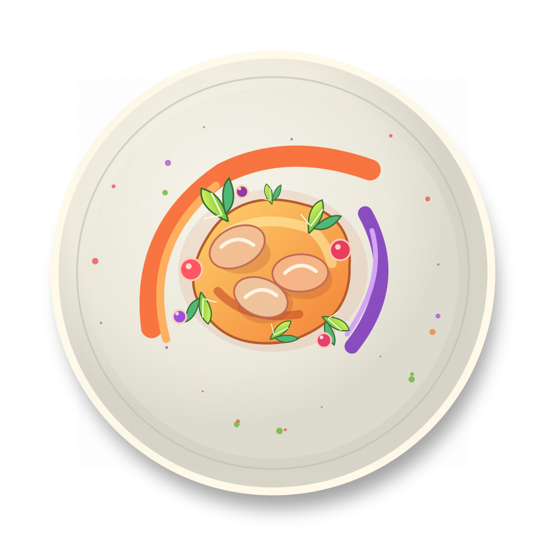
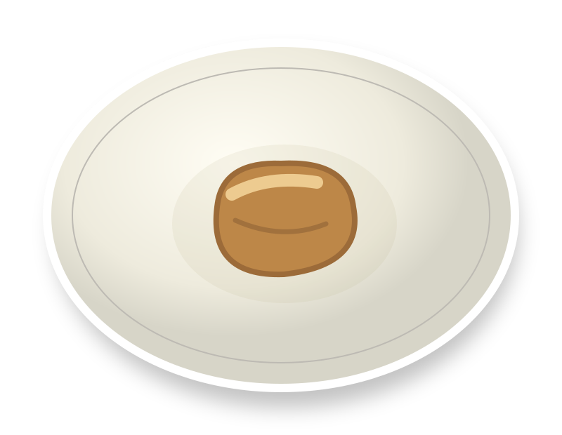
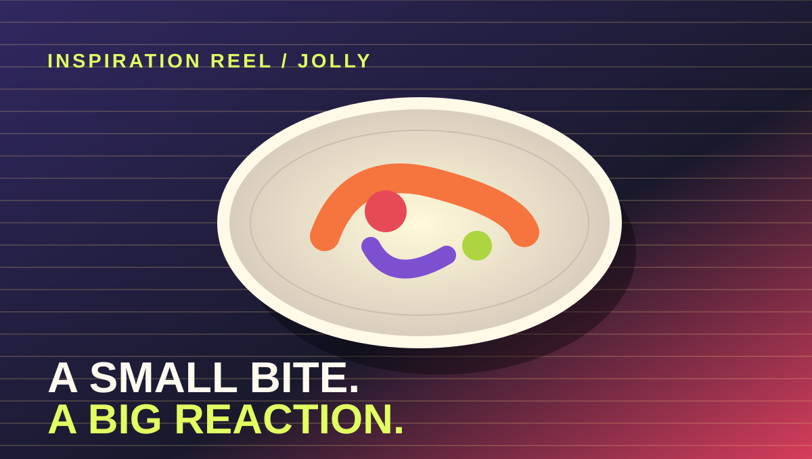

✳
THE FOOD EXPERT
Knows the cuisine and guides what is authentic, meaningful and achievable.
Not just a food fair. A cultural exchange you can taste.

You share a dish. Someone asks a question. A stranger becomes a conversation.
You don't need expensive ingredients. You need a good idea, real flavour and a little intention.

What happens when young people experience food that's been designed, not just cooked?

CLICK TO PLAY · INTERNET REQUIREDChoose a country or cuisine you can represent responsibly. You don't have to be born there—but someone in your group should know the food well enough to lead.
Specific beats stereotypical. Tell us why this dish means something, not what an entire country is supposedly like.
Who makes it? When do you eat it? What memory, person or place lives inside this recipe?
Not pairs. Build a crew big enough to cook, film, explain, organize and serve. The teacher signs off on the group before the budget is approved.
Knows the cuisine and guides what is authentic, meaningful and achievable.
Recipes, practice, timing, safe preparation and enough tasting portions.
Script, shoot and edit the one-minute cultural food film.
Invite 2i English B students; make STX guests feel welcome at the fair.
Budget, shopping, receipts, setup, serving and keeping everything on track.
Your video should introduce the dish, its cultural history, why you chose it, and what it reveals about the culture. Connect it to a virtue—wisdom, for example—if it fits.
Start with an image, sound, surprising detail or one strong line that makes someone want to taste your dish.
00:00 → 00:10Working budget. Group and spending must receive teacher approval first.
Make groups large enough to handle the different jobs. Teacher sign-off is required.
Hold on to all purchase receipts for reimbursement/accountability.
Plan your preparation and cooking for Global Day itself.
Bring food ready to share with STX students in the fifth module.
Dish, history, why you chose it, cultural meaning, and a virtue if it fits.
Choose a country or cuisine and a meaningful dish. Build a sizeable crew. Map the jobs. Bring the proposal to your teacher for approval.
Reach out specifically to 2i English B students and invite them into your groups. Plan cost, quantities, cooking, service and your 60-second film.
Prepare and cook your dishes on Global Day. Bring them to the food fair for module 5. Welcome and talk with STX guests.
Make each serving easy to sample. Consider food hygiene, ingredient/allergen information and a simple way to explain the dish.
Make a first draft with your group, then show it to your teacher. This page saves only on your device; it does not submit anything.
One good bite. One meaningful story. One conversation that wouldn't have happened otherwise.